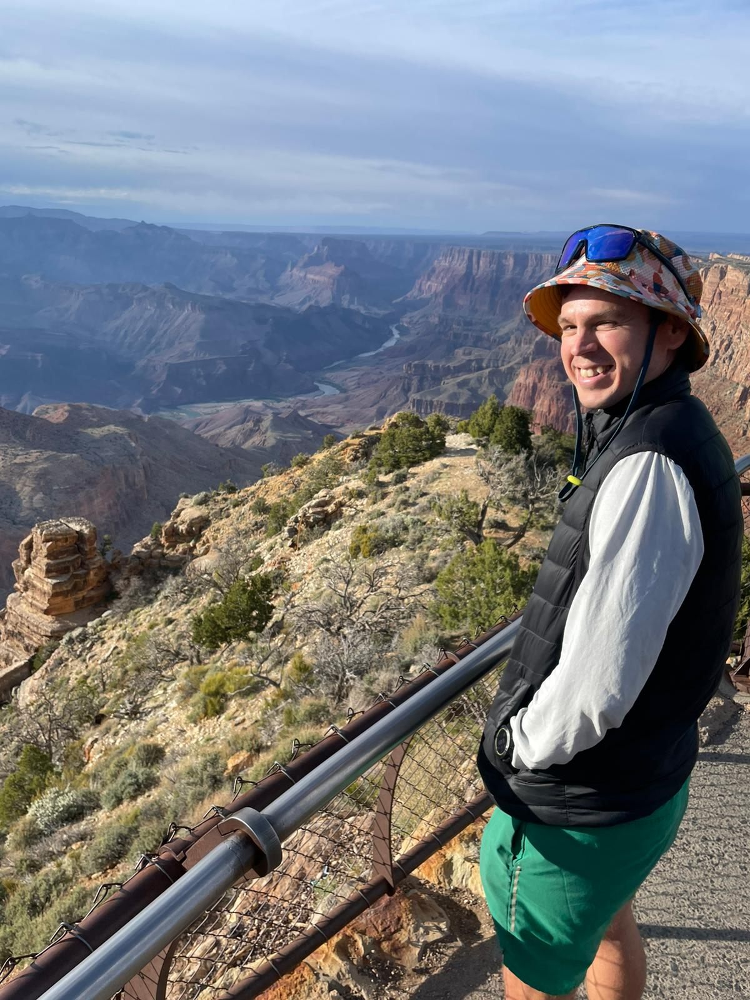
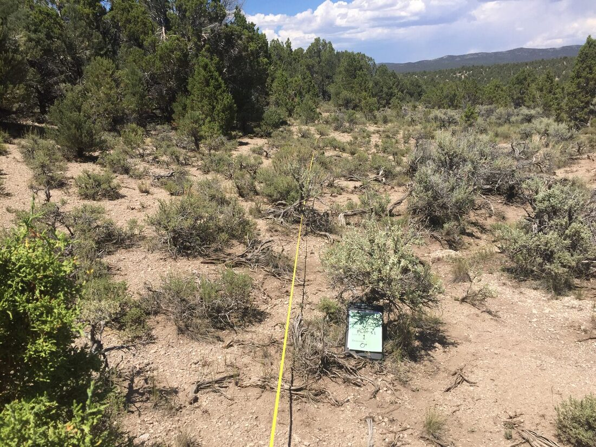
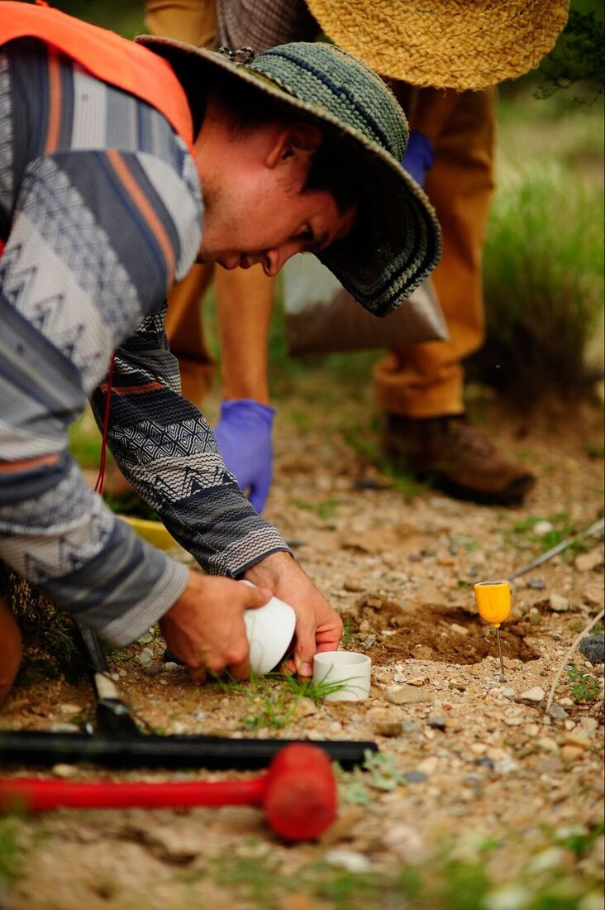
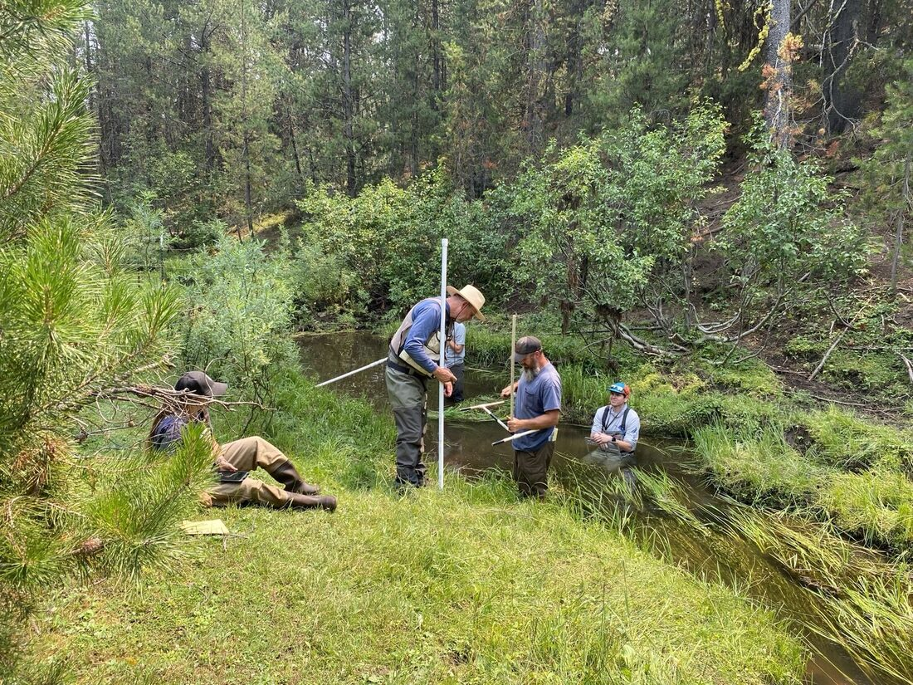
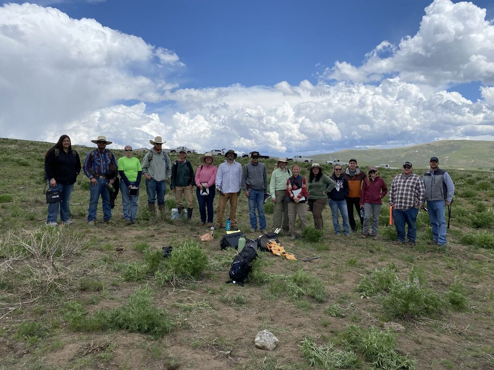
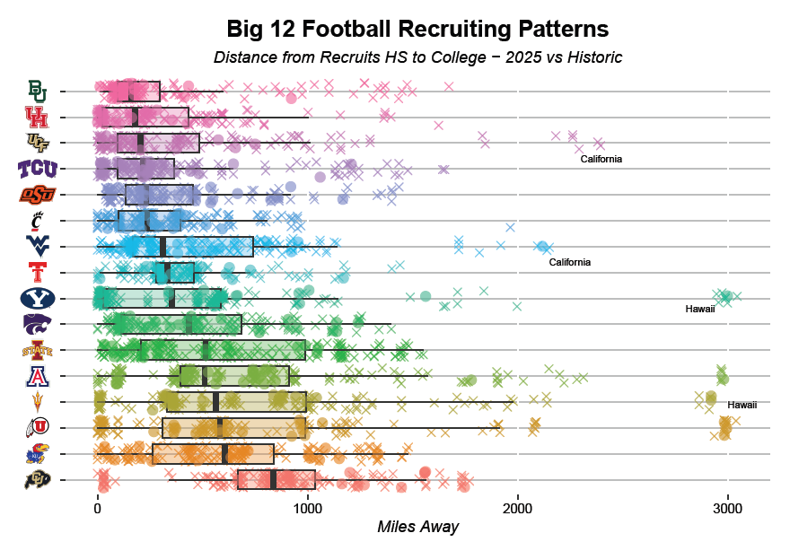
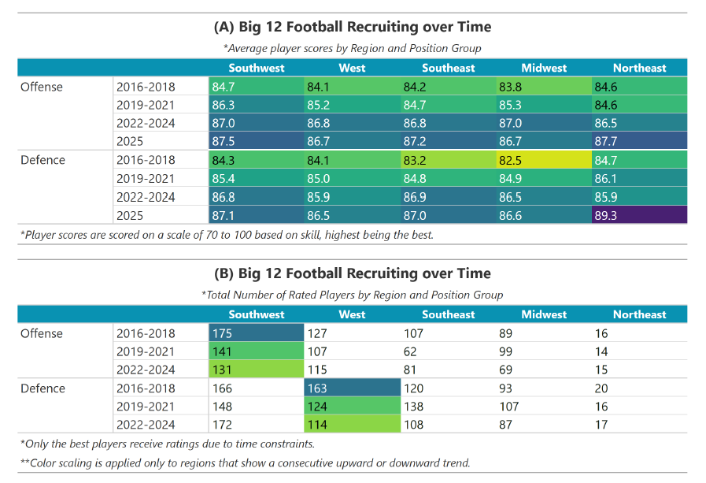
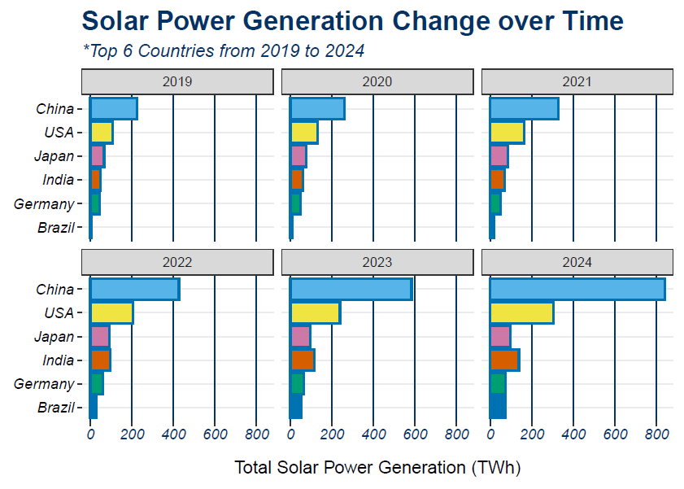
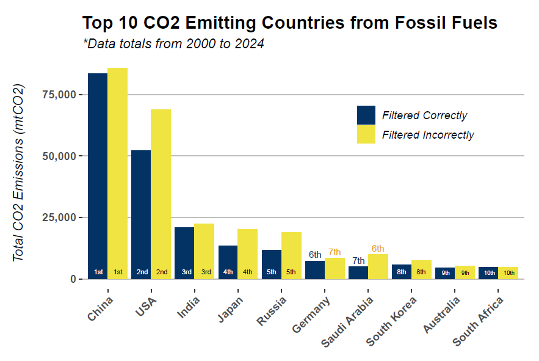

Timothy Gilbert
I build R Shiny apps, relational databases, and custom data workflows for environmental consultants, university labs, and small businesses. Ecologist by training, data engineer by trade.
Welcome to my digital portfolio. I’m a data scientist and ecologist specializing in R Shiny applications, relational databases, and custom data workflows. I hold a B.S. in Natural Resources and am completing my M.S. in Data Science at the University of Arizona. I also run Desert Data Labs LLC — a small consulting studio that builds data-collection apps, dashboards, and automation tools for environmental consultants, university labs, and small businesses.
Fun things I love to work on…
- Sports analytics and data visualization
- Data-entry applications with a SQL back-end (local and web-hosted)
- Ecological data management and visualization
- Custom web-scraping interactive tools
- Machine learning for forecasting




Design & motion
Design & motion, too
Not just dashboards. This is Sprout — a brand mark for Desert Data Labs, built in pure SVG + CSS. No images, no libraries; every vine draws itself and the leaves unfurl. Hover or tap it to watch it grow.
Fun data visualizations
Big 12 Recruiting — Distance Traveled by Recruits

Big 12 Recruiting over Time (Table)

Solar Power Generation Change over Time

Top 10 CO₂-Emitting Countries from Fossil Fuels
